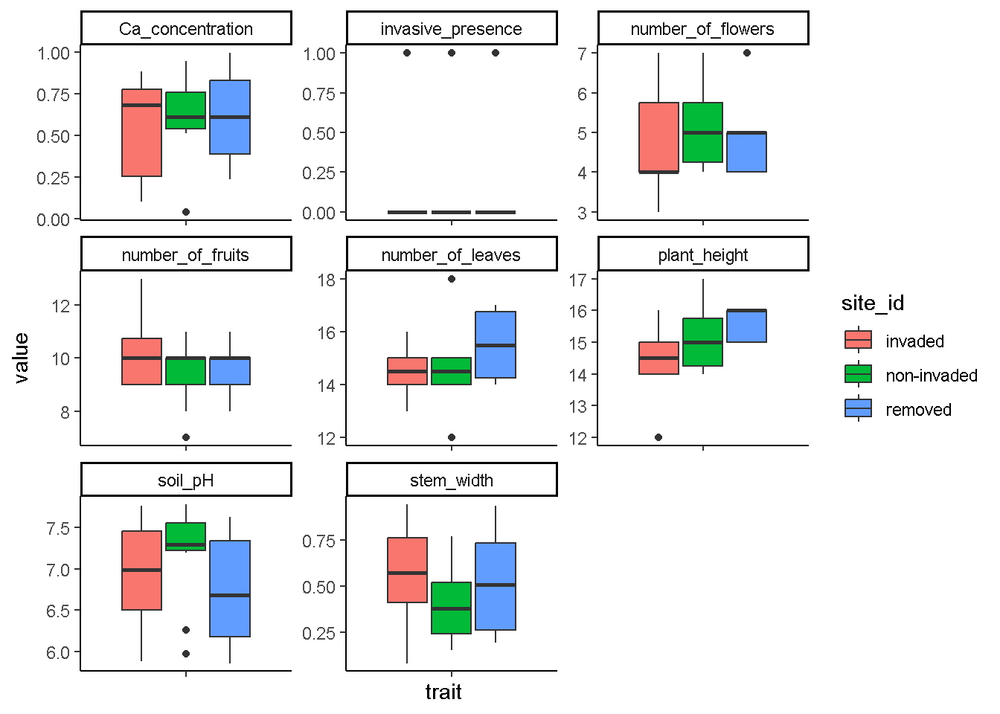
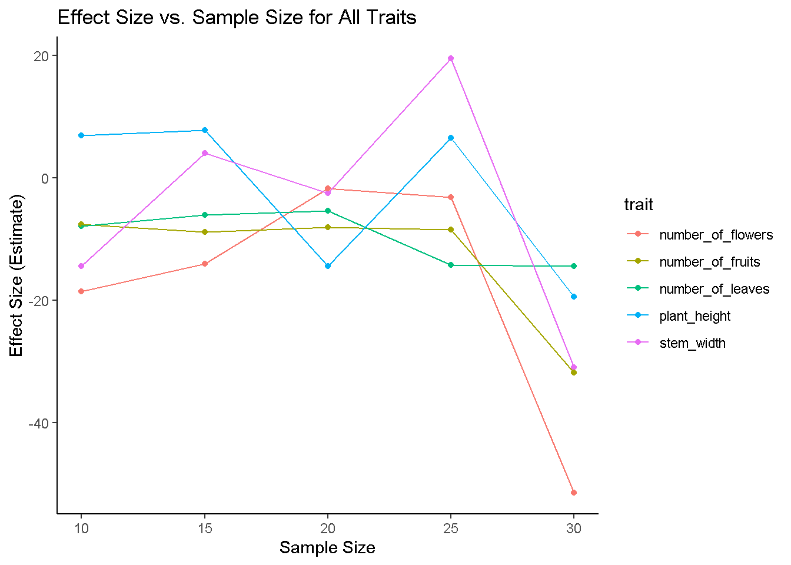

fake_datasets_homework
Isaac Buabeng
2025-05-07
Description of Dataset
My pseudo-dataset is fashioned on variables I often encounter in my projects for my thesis work. I work with species functional traits and how those traits affect some life history activity of the species. In this case, I am making a dataset on measured traits of species within a rich fen plant community in Vermont.
A “rich fen” is a type of wetland characterized by a high concentration of minerals in its groundwater, resulting in a diverse plant community and typically a higher pH compared to other fens; it is essentially a fen that is fed by mineral-rich water, usually containing high levels of calcium, creating a more alkaline environment compared to a “poor fen” which receives less mineral-rich water. Rich Fens typically occur on gentle slopes and have shallow peat accumulations of less than three feet, although in some cases the peat is deeper. The peat is saturated throughout the growing season, and there may be small, shallow pools scattered over the generally concave surface of the fen.
Rich Fens are dominated by brown mosses and low sedges and grasses. Characteristic mosses are starry campylium, Scorpidium revolvens, Calliergonella cuspidata, Philonotis fontana, Ptychostomum pseudotriquetrum, and Tomenthypnum nitens. The low, herbaceous cover is primarily sedges, with inland sedge, porcupine sedge, yellow sedge, and Hudson Bay bulrush present in most fens. Other characteristic herbs include bristle-stalked sedge, water avens, single-spike muhlenbergia, Kalm’s lobelia, golden ragwort, and blue flag. Many other herbaceous plants may be present. Red-osier dogwood is a shrub that occurs in most Rich Fens but is seldom very abundant. Shrubby cinquefoil and alder-leaved buckthorn are scattered across many fens, and they are locally abundant in others.
Study Area and Design
In this study, we sampled species traits along with other environmental variables from single 2m x 2m quadrats set up in three parts of the Eshqua Bog Natural Area. One part with invasive plant species present, the second with invasives previously present but removed and the last without invasives present.
Hypothesis:
There will be a significant difference in the traits of species found within the different sites sampled and this will be influenced by the presence or absence of invasive plants within the different habitats.
Variables in my dataset:
Names of the Sites Sampled From = site_id
Names of the Species sampled = species_names
Plant Height = plant_height
Stem Width = stem_width
Number of Flowers = number_of_flowers
Number of Leaves = number_of_leaves
Number of Fruits = number_of_fruits
soil pH = soil_pH
Calcium concentrations within the soils in the sampled quadrats = Ca_concentration
For more information about rich fen plant communities, please visit ANR’s website on rich fens in Vermont
loading necessary libraries
library(skimr)
library(tidyverse)## Warning: package 'purrr' was built under R version 4.4.3## ── Attaching core tidyverse packages ──────────────────────── tidyverse 2.0.0 ──
## ✔ dplyr 1.1.4 ✔ readr 2.1.5
## ✔ forcats 1.0.0 ✔ stringr 1.5.1
## ✔ ggplot2 3.5.1 ✔ tibble 3.2.1
## ✔ lubridate 1.9.4 ✔ tidyr 1.3.1
## ✔ purrr 1.0.4
## ── Conflicts ────────────────────────────────────────── tidyverse_conflicts() ──
## ✖ dplyr::filter() masks stats::filter()
## ✖ dplyr::lag() masks stats::lag()
## ℹ Use the conflicted package (<http://conflicted.r-lib.org/>) to force all conflicts to become errorsCreate the fake dataset (data simulation)
site_id <- c("invaded", "non-invaded", "removed")
species_name <- c("Starry campylium", "Scorpidium revolvens", "Calliergonella cuspidata", "Bebris thunbergii", "Reynoutria japonica", "inland sedge", "porcupine sedge", "yellow sedge", "bristle-stalked sedge", "water avens", "Philonotis fontana", "Ptychostomum pseudotriquetrum", "Carex schweinitzii", "Eriophorum gracile", "Malaxis unifolia", "Elodium blandowii", "Salix pedicellaris", "Pyrola asarifolia ssp. asarifolia", "Cladium mariscoides", "Salix candida", "bristle-stalked sedge", "Starry campylium", "Scorpidium revolvens", "Reynoutria japonica", "Elodium blandowii", "inland sedge", "yellow sedge", "Malaxis unifolia", "Cypripedium parviflorum var. makasin", "Meesia triquetra")
plant_height <- c(round(rnorm(30, mean=15)))
head(plant_height)## [1] 15 14 16 12 17 16stem_width <- c(runif(30))
head(stem_width)## [1] 0.3939316 0.3891992 0.7101352 0.6968955 0.6161045 0.2071937number_of_leaves <- c(round(rnorm(30, mean=15)))
head(number_of_leaves)## [1] 15 15 14 14 14 15number_of_flowers <- c(round(rnorm(30, mean = 5)))
print(number_of_flowers)## [1] 4 4 5 4 4 7 6 5 4 4 5 4 4 4 4 5 6 5 7 5 4 4 7 5 3 6 5 6 5 5number_of_fruits <- c(round(rnorm(30, mean=10)))
head(number_of_fruits)## [1] 9 11 10 10 7 10soil_pH <- c(runif(30, max = 7.8, min = 5.8)) #this is usually the range of pH within rich fen plant communities
head(soil_pH)## [1] 7.397470 7.780719 6.550546 7.763007 7.195810 7.628538Ca_concentration <- c(runif(30))
head(Ca_concentration)## [1] 0.88282126 0.57636294 0.96854141 0.17444079 0.04070917 0.77838017# make the dataframe
data.frame(site_id, species_name, plant_height, stem_width, number_of_leaves, number_of_flowers, number_of_fruits, soil_pH, Ca_concentration) -> trait_data
tail(trait_data) # awesome, fake dataset created!## site_id species_name plant_height stem_width
## 25 invaded Elodium blandowii 15 0.18214660
## 26 non-invaded inland sedge 15 0.37029442
## 27 removed yellow sedge 15 0.74337356
## 28 invaded Malaxis unifolia 16 0.08133323
## 29 non-invaded Cypripedium parviflorum var. makasin 15 0.21726726
## 30 removed Meesia triquetra 16 0.34459957
## number_of_leaves number_of_flowers number_of_fruits soil_pH
## 25 16 3 11 5.885527
## 26 15 6 11 7.671114
## 27 16 5 9 6.120144
## 28 15 6 10 6.647597
## 29 14 5 10 6.262084
## 30 17 5 10 7.517645
## Ca_concentration
## 25 0.7873418
## 26 0.5136521
## 27 0.2371616
## 28 0.7156504
## 29 0.7095801
## 30 0.7528812head(trait_data)## site_id species_name plant_height stem_width number_of_leaves
## 1 invaded Starry campylium 15 0.3939316 15
## 2 non-invaded Scorpidium revolvens 14 0.3891992 15
## 3 removed Calliergonella cuspidata 16 0.7101352 14
## 4 invaded Bebris thunbergii 12 0.6968955 14
## 5 non-invaded Reynoutria japonica 17 0.6161045 14
## 6 removed inland sedge 16 0.2071937 15
## number_of_flowers number_of_fruits soil_pH Ca_concentration
## 1 4 9 7.397470 0.88282126
## 2 4 11 7.780719 0.57636294
## 3 5 10 6.550546 0.96854141
## 4 4 10 7.763007 0.17444079
## 5 4 7 7.195810 0.04070917
## 6 7 10 7.628538 0.77838017summary(trait_data)## site_id species_name plant_height stem_width
## Length:30 Length:30 Min. :12.00 Min. :0.08133
## Class :character Class :character 1st Qu.:14.25 1st Qu.:0.24604
## Mode :character Mode :character Median :15.00 Median :0.49727
## Mean :15.07 Mean :0.49661
## 3rd Qu.:16.00 3rd Qu.:0.70683
## Max. :17.00 Max. :0.94602
## number_of_leaves number_of_flowers number_of_fruits soil_pH
## Min. :12 Min. :3.000 Min. : 7.000 Min. :5.861
## 1st Qu.:14 1st Qu.:4.000 1st Qu.: 9.000 1st Qu.:6.389
## Median :15 Median :5.000 Median :10.000 Median :7.221
## Mean :15 Mean :4.867 Mean : 9.767 Mean :6.962
## 3rd Qu.:16 3rd Qu.:5.000 3rd Qu.:10.000 3rd Qu.:7.466
## Max. :18 Max. :7.000 Max. :13.000 Max. :7.781
## Ca_concentration
## Min. :0.04071
## 1st Qu.:0.39019
## Median :0.63070
## Mean :0.59357
## 3rd Qu.:0.78510
## Max. :0.99429# make a presence and absence column for the invasive species
trait_data$invasive_presence <- ifelse(trait_data$species_name %in% c("Bebris thunbergii", "Reynoutria japonica"), 1, 0)Exploring our data
# The most basic thing you could when exploring your data would be some kind of box plots (depending on your type of data of course!), so that what i'll do in this case. But first;
# let's convert our data into a longer format
long_data <- trait_data %>% pivot_longer(!c(site_id, species_name), names_to = "trait", values_to = "value")
# visualize traits by sites in a single figure
ggplot(data=long_data,
aes(x=trait,y=value, fill=site_id))+
geom_boxplot() +
theme_classic() +
theme(axis.text.x = element_blank()) +
facet_wrap(trait~.,scale = "free")
# looks like invasive species do leave behind an effect on the traits of species within the habitats they are found based on these box plots. But are these real differences? We will have to test our data for actual differences.Testing for differences in traits across sites using a MANOVA
manova <- manova(cbind(plant_height, stem_width, number_of_leaves, number_of_flowers, number_of_fruits) ~ site_id, data = trait_data)
summary(manova) #looks like our box plots deceived us after all and our hypothesis may not be correct after all, plant traits are similar across sites regardless of the presence of invasives (p>0.1899).## Df Pillai approx F num Df den Df Pr(>F)
## site_id 2 0.36861 1.0846 10 48 0.3925
## Residuals 27Testing for the effects of invasives on species traits using a logistic regression model
mod1 <- glm(invasive_presence ~ plant_height + stem_width + number_of_leaves + number_of_flowers + number_of_fruits, data = trait_data)
summary(mod1)##
## Call:
## glm(formula = invasive_presence ~ plant_height + stem_width +
## number_of_leaves + number_of_flowers + number_of_fruits,
## data = trait_data)
##
## Coefficients:
## Estimate Std. Error t value Pr(>|t|)
## (Intercept) 3.87008 1.42472 2.716 0.0120 *
## plant_height -0.06470 0.06067 -1.066 0.2969
## stem_width -0.06856 0.22460 -0.305 0.7628
## number_of_leaves -0.08869 0.04124 -2.151 0.0418 *
## number_of_flowers -0.07641 0.05756 -1.328 0.1968
## number_of_fruits -0.10843 0.04898 -2.214 0.0366 *
## ---
## Signif. codes: 0 '***' 0.001 '**' 0.01 '*' 0.05 '.' 0.1 ' ' 1
##
## (Dispersion parameter for gaussian family taken to be 0.08274497)
##
## Null deviance: 2.7000 on 29 degrees of freedom
## Residual deviance: 1.9859 on 24 degrees of freedom
## AIC: 17.682
##
## Number of Fisher Scoring iterations: 2plot(mod1)


# looks like our hypothesis will be rejected as there aren't any significant differences in traits across the sites irrespective of the presence of invasives. However, i wonder if the results will be the same if we increased our sample sizes.Explore Sample size effects when we increase sample size by 5 each iteration
set.seed(123)
# Set up storage for results
results <- data.frame(sample_size = integer(),
effect_size = numeric(),
trait = character(),
p_value = numeric())
# Define the traits to analyze
traits <- c("plant_height", "stem_width", "number_of_leaves",
"number_of_flowers", "number_of_fruits")
# randomly sample data from trait_data, and run a linear mixed effects model on them
for (n in seq(10, nrow(trait_data), by = 5)) { # Increase sample size by 5 each iteration
# Randomly sample n observations
temp_data <- trait_data[sample(1:nrow(trait_data), n, replace = TRUE), ]
# Fit logistic regression model
mod <- glm(invasive_presence ~ plant_height + stem_width + number_of_leaves +
number_of_flowers + number_of_fruits, family = binomial, data = temp_data)
# Extract effect sizes and p-values for all traits
for (trait in traits) {
effect_size <- coef(mod)[trait]
p_value <- summary(mod)$coefficients[trait, 4] # p-value for the trait
# Store results
results <- rbind(results, data.frame(sample_size = n, trait = trait,
effect_size = effect_size, p_value = p_value))
}
}## Warning: glm.fit: fitted probabilities numerically 0 or 1 occurred
## Warning: glm.fit: fitted probabilities numerically 0 or 1 occurred
## Warning: glm.fit: fitted probabilities numerically 0 or 1 occurred
## Warning: glm.fit: fitted probabilities numerically 0 or 1 occurred## Warning: glm.fit: algorithm did not converge## Warning: glm.fit: fitted probabilities numerically 0 or 1 occurredhead(results) # looks like to actually detect real difference i might want to further increase sample size beyond 30 because there's nothing significant popping up. Hopefully my graphs tell a better narrative of my observations.## sample_size trait effect_size p_value
## plant_height 10 plant_height 6.962197 0.9999117
## stem_width 10 stem_width -14.387934 0.9999817
## number_of_leaves 10 number_of_leaves -7.901939 0.9999121
## number_of_flowers 10 number_of_flowers -18.538820 0.9999281
## number_of_fruits 10 number_of_fruits -7.525686 0.9999113
## plant_height1 15 plant_height 7.823246 0.9999332visualize the effects of sample size on Statistical Significance for All Traits
# Plotting P-Values for Each Trait Across Sample Sizes
ggplot(results, aes(x = sample_size, y = p_value, color = trait)) +
geom_point() +
geom_line() +
geom_hline(yintercept = 0.05, linetype = "dashed", color = "red") +
labs(title = "Impact of Sample Size on the Statistical Significance for All Traits",
x = "Sample Size", y = "P-Value") +
theme_classic()
# Plotting Effect Sizes for Each Trait Across Sample Sizes
ggplot(results, aes(x = sample_size, y = effect_size, color = trait)) +
geom_point() +
geom_line() +
labs(title = "Effect Size vs. Sample Size for All Traits",
x = "Sample Size", y = "Effect Size (Estimate)") +
theme_classic()
# yep! Never lied! But mind you, this is for an increase by 5 at each iteration, what if we increased it by 10?Explore Sample size effects when we increase sample size by 10 each iteration
set.seed(123)
# Set up storage for results
results1 <- data.frame(sample_size = integer(),
effect_size = numeric(),
trait = character(),
p_value = numeric())
# Define the traits to analyze
traits <- c("plant_height", "stem_width", "number_of_leaves",
"number_of_flowers", "number_of_fruits")
# randomly sample data from trait_data, and run a linear mixed effects model on them
for (n in seq(10, nrow(trait_data), by = 10)) { # Increase sample size by 10 each iteration
# Randomly sample n observations
temp_data <- trait_data[sample(1:nrow(trait_data), n, replace = TRUE), ]
# Fit logistic regression model
mod1 <- glm(invasive_presence ~ plant_height + stem_width + number_of_leaves +
number_of_flowers + number_of_fruits, family = binomial, data = temp_data)
# Extract effect sizes and p-values for all traits
for (trait in traits) {
effect_size1 <- coef(mod1)[trait]
p_value1 <- summary(mod1)$coefficients[trait, 4] # p-value for the trait
# Store results
results1 <- rbind(results, data.frame(sample_size = n, trait = trait,
effect_size = effect_size1, p_value = p_value1))
}
}## Warning: glm.fit: fitted probabilities numerically 0 or 1 occurred
## Warning: glm.fit: fitted probabilities numerically 0 or 1 occurred
## Warning: glm.fit: fitted probabilities numerically 0 or 1 occurredhead(results1) ## sample_size trait effect_size p_value
## plant_height 10 plant_height 6.962197 0.9999117
## stem_width 10 stem_width -14.387934 0.9999817
## number_of_leaves 10 number_of_leaves -7.901939 0.9999121
## number_of_flowers 10 number_of_flowers -18.538820 0.9999281
## number_of_fruits 10 number_of_fruits -7.525686 0.9999113
## plant_height1 15 plant_height 7.823246 0.9999332visualize the effects of sample size on Statistical Significance for All Traits
# Plotting P-Values for Each Trait Across Sample Sizes
ggplot(results1, aes(x = sample_size, y = p_value, color = trait)) +
geom_point() +
geom_line() +
geom_hline(yintercept = 0.05, linetype = "dashed", color = "red") +
labs(title = "Impact of Sample Size on the Statistical Significance for All Traits",
x = "Sample Size", y = "P-Value") +
theme_classic()
# Plotting Effect Sizes for Each Trait Across Sample Sizes
ggplot(results1, aes(x = sample_size, y = effect_size, color = trait)) +
geom_point() +
geom_line() +
labs(title = "Effect Size vs. Sample Size for All Traits",
x = "Sample Size", y = "Effect Size (Estimate)") +
theme_classic() # don't think nothing changed!